人才培育
Talent Education
本社團為培育專業救護技能，設計多元化且高實用性的課程與訓練，並積極推動社員參與。定期舉辦EMT-1 中原專班考證課程，提供初級救護技術員考試所需的理論與實務培訓，幫助學員取得專業認證。針對校園安全，開設相關急救教育培訓課程，強化急救技能普及率，提升緊急狀況處理能力。此外，社團也積極推動國際化教學，與美國Clemson大學及本校華語中心舉辦2025暑期實習課程，融合初級救護技術員基礎培訓與中醫參訪，結合跨文化醫療實務，拓展學員的專業視野。所有課程皆以專業理論結合實務操作為核心，強調技能演練、情境模擬與臨場判斷能力的建立，致力於全面提升學員急救知識、救護能力與服務素養，使急救教育真正落實於生活與社會。

美國 Clemson 暑期實習課程_中醫參訪
本社積極推動國際化教學，帶領社員跨越國界，與美國Clemson大學生前往陳潮宗中醫診所進行參訪，提供一場跨越東西方醫療思維的深度對話。參訪過程中，社團幹部發揮雙語溝通與專業導覽能力，帶領國際學員走進中醫藥的臨床教學基地，從傳統「望聞問切」的診斷邏輯、藥材炮製工藝，到針灸與經絡穴位的生理基礎，進行系統化的介紹。這不僅是一次文化導覽，更是社團展現跨領域整合能力的機會；透過與國際交換生的互動，我們探討了傳統中醫與西方現代急診醫學在預防與復原階段的互補性。這場交流強化了社團的國際溝通韌性，更在校際間建立了深厚的醫療知能連結，展現社團具備接待國際學術團隊的專業水準。
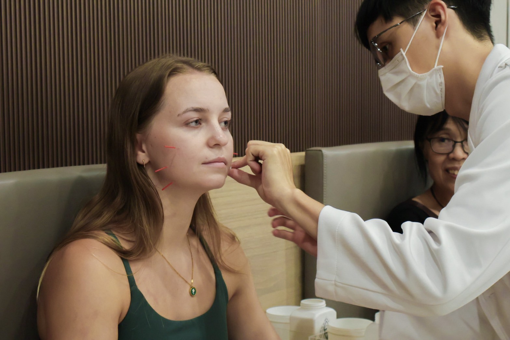
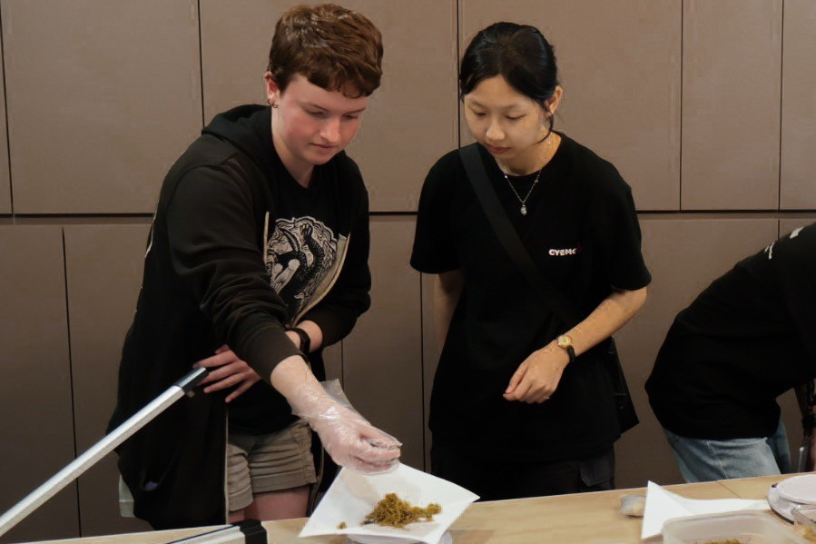
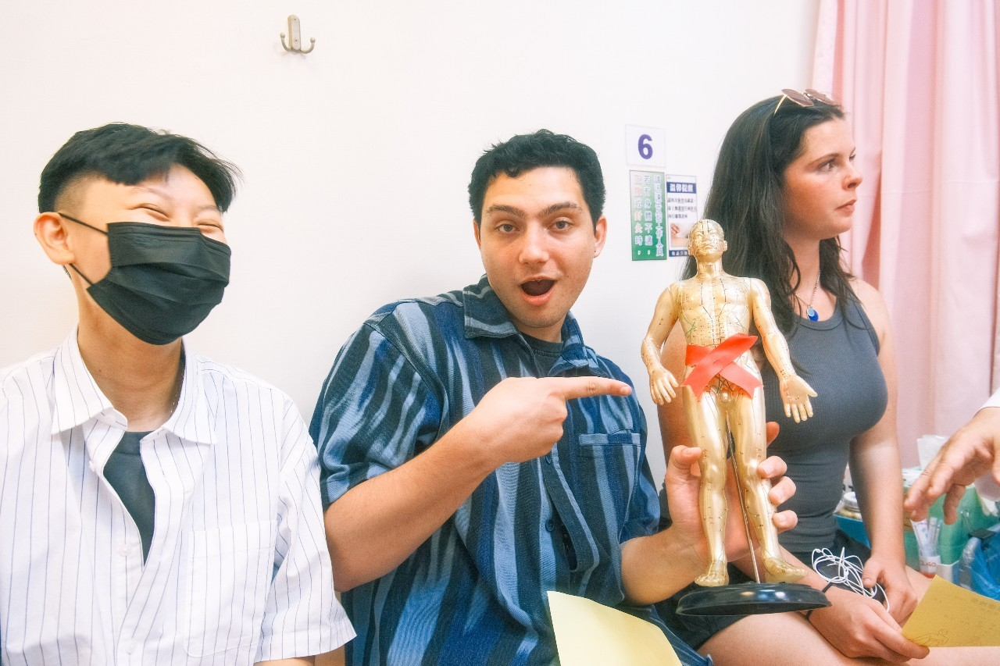
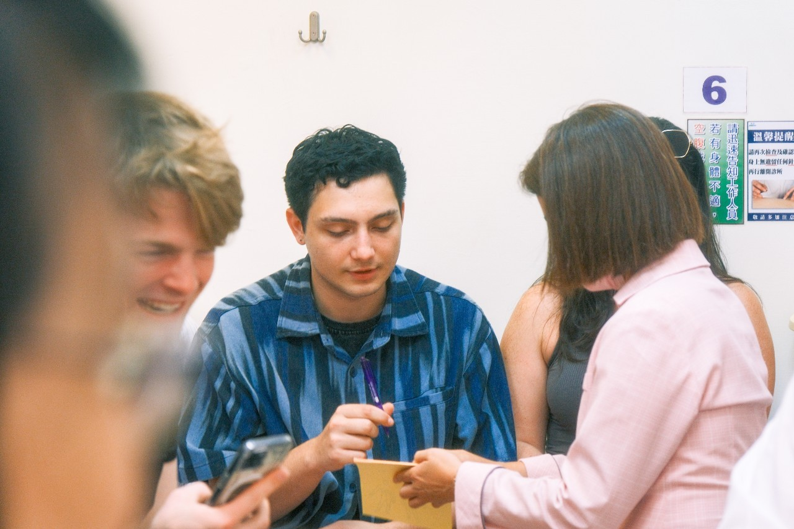
BLS-I 基本救命術指導員培訓課程
從「救護執行者」蛻變為「急救傳播者」，是培育人才的重要里程碑。本社為持續提升幹部的急救專業能力與教學素養，推動更高水準的急救教育體系，特安排幹部參與 「基本救命術指導員（BLS-I）考證訓練」。本課程由藍衣天使救護協會主辦，旨在標準化基本救命術（BLS）之教學、評量、登錄、認證與統計作業，並強化急救教育的執行品質與推廣能力。 透過專業的師資培訓與嚴謹認證，幹部將學習並精進 CPR、AED、窒息處理、創傷救護等急救技能，並獲得 BLS-I 指導員認證，成為具備教學熱忱與專業素養的 BLS-I 指導員。不僅是個人專業能力的躍升，更是社團教學量能的擴充。期許種子教官的我們能成為推動校內外急救教育的中堅力量，將急救知識更廣泛、正確地傳遞出去，共同創造一個更安全、更有品質的社會環境。
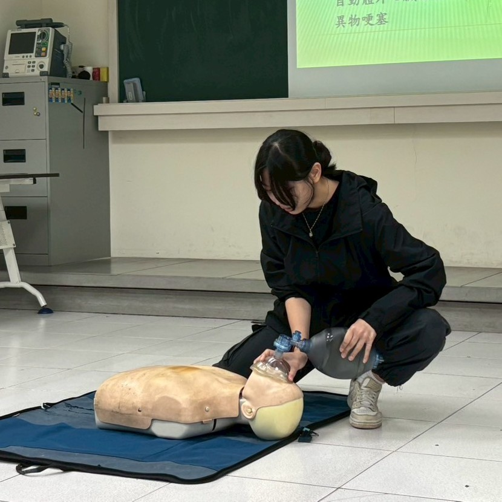
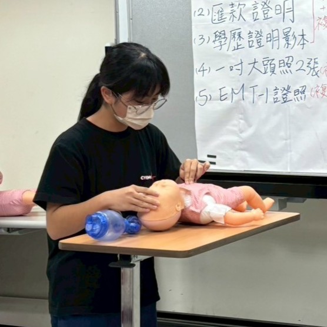
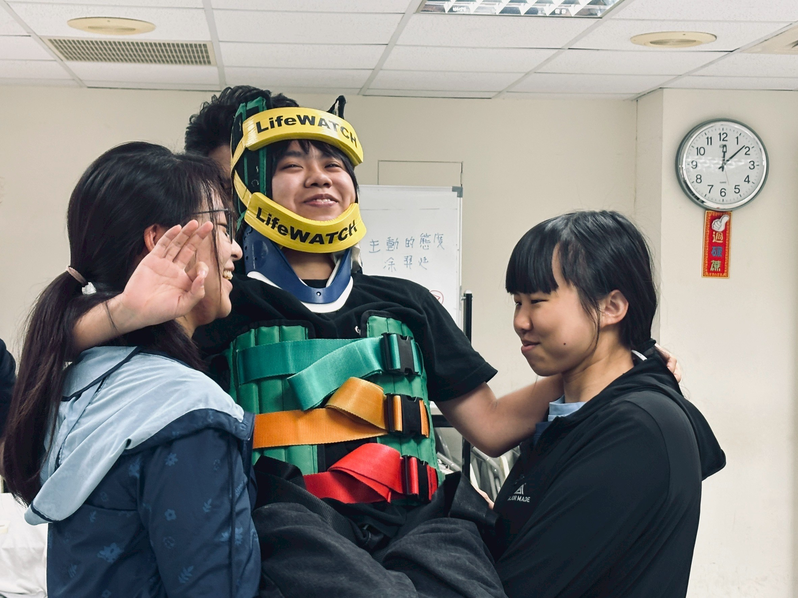
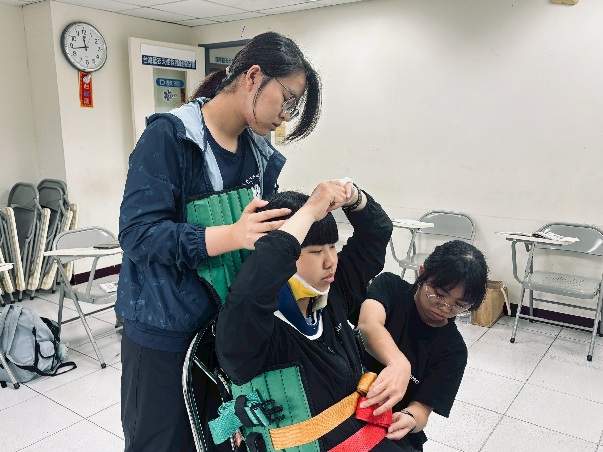
EMT-1初級救護技術員考證訓練中原大學專班
為了培育具備緊急醫療救護能力的人才，本社在校內舉辦EMT-1（初級救護技術員）考證訓練，提供便利且專業的學習與實作管道，落實急救技能的普及與深耕。致力於透過嚴謹的系統化教學與紮實的實務操作，帶領學員從基礎生理知識到創傷、非創傷急救進行全面學習，幫助學生建立標準化急救技能，進一步提升其在面對突發事件時的應變能力與決策判斷。 課程內容涵蓋心肺復甦術（CPR）、自動體外心臟電擊器（AED）操作、大量出血控制、創傷處置及傷患評估等核心急救技能，並透過模擬情境訓練，讓學員實際參與急救操作，強化技能應用。不僅在校園內建立堅實的安全防護網，更進一步促進公共安全，將這份守護生命的力量從校園擴散至社區，為社會大眾的生命安全構築更堅實的後盾。透過持續的學習與實踐，讓更多人具備專業的救護知識與技能，守護生命、貢獻社會。
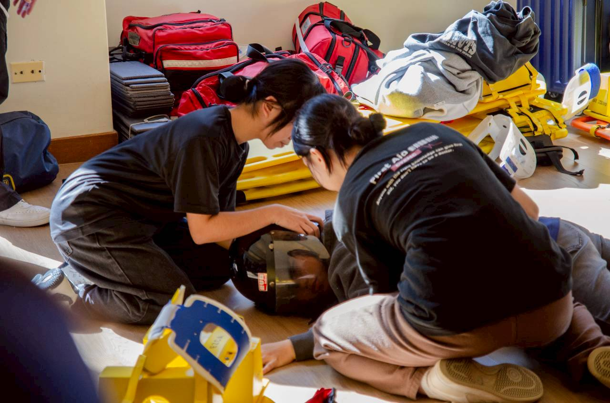
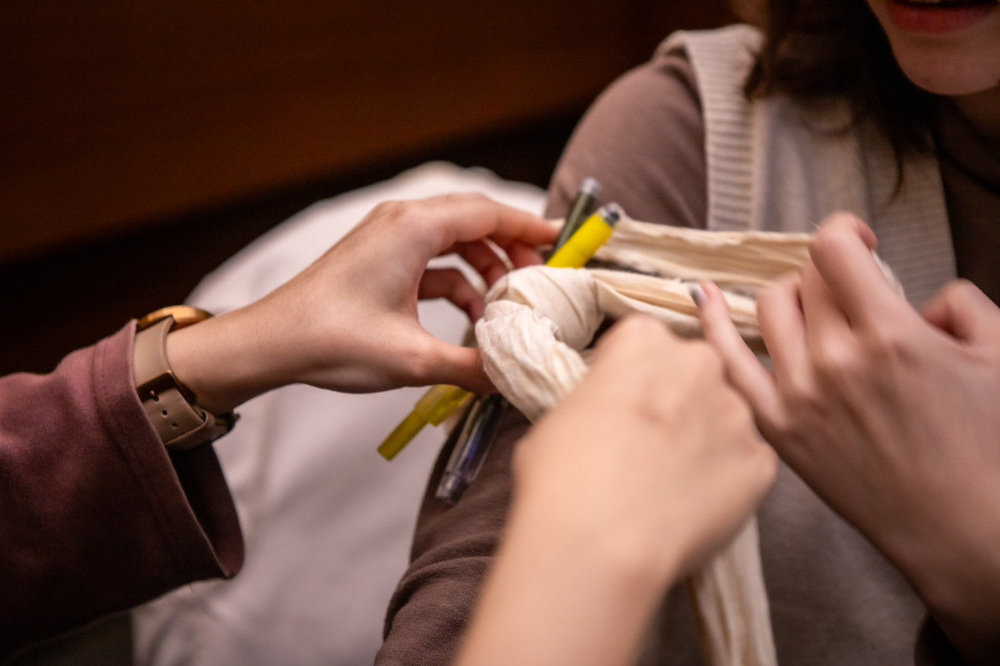
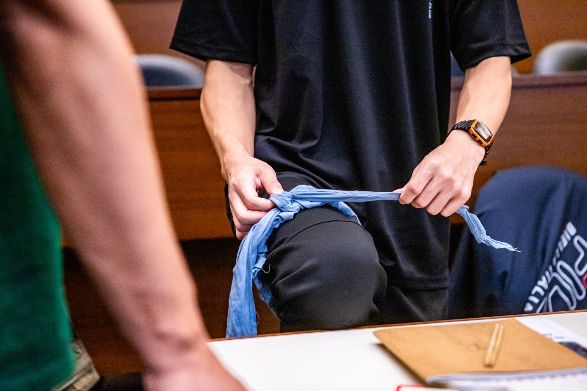
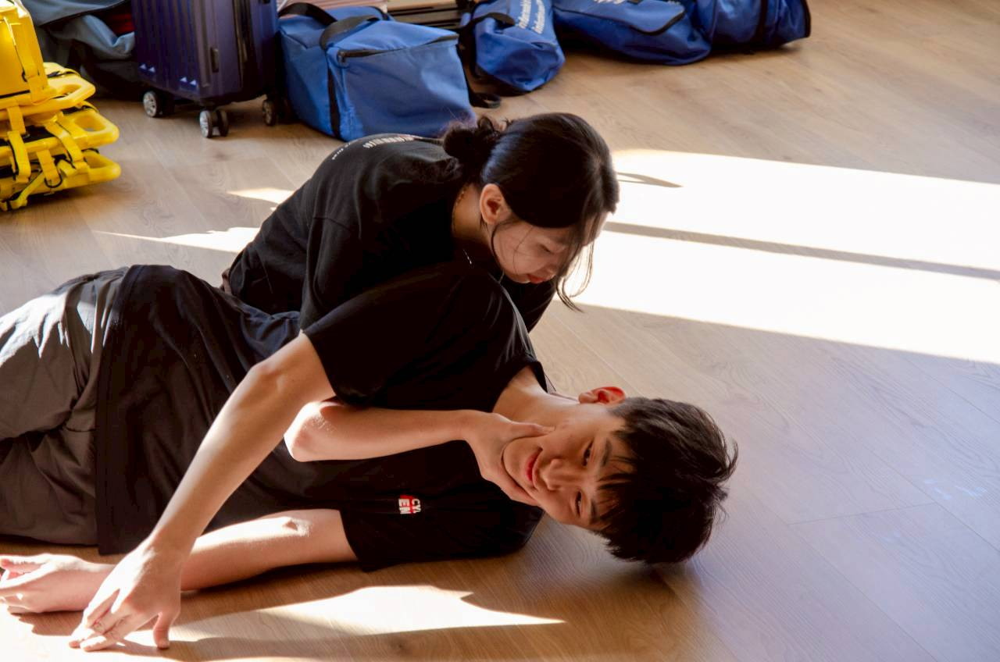
創傷止血與心肺急救實戰研習
與「安妮怎麼了?」深度合作，針對填塞止血、止血帶與CPR+AED等進行高擬真的實戰教學。課程重點聚焦於在混亂現場中的止血策略，包含止血帶的精準定位與施力、針對開放性創傷的「傷口填塞」技術，以及利用專業訓練模擬器進行出血情境的壓力測試。此外，課程引入了 QCPR 監控系統，即時分析壓胸深度與頻率，力求達到最完美的循環支持。透過專業器材的輔助，社員能有效克服真實創傷場景帶來的心理震撼，訓練在最短時間內做出最正確的救護決策。這場研習強調「實戰化」與「手感記憶」的養成，是提升社員面對突發創傷與心搏驟停時應變能量的最高層級技術補給站。
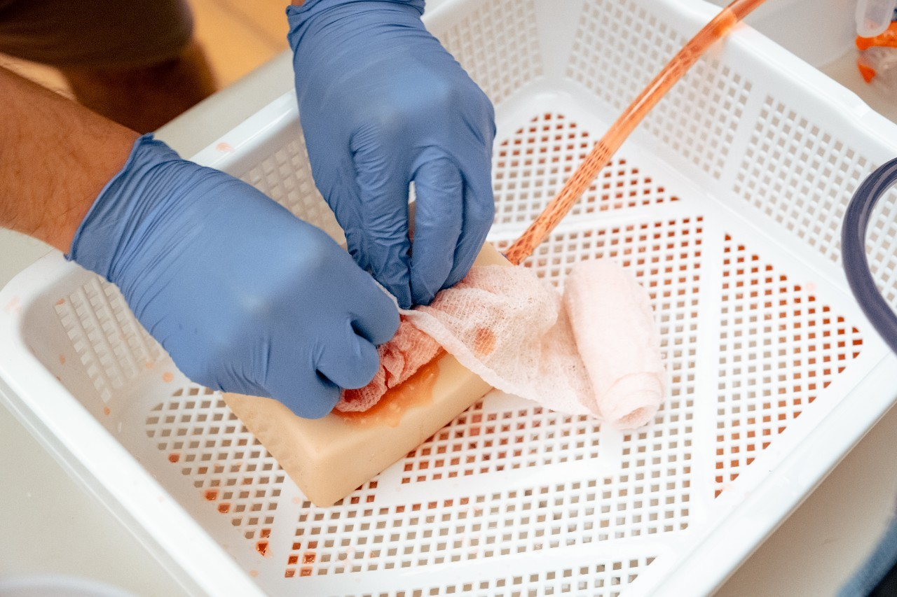
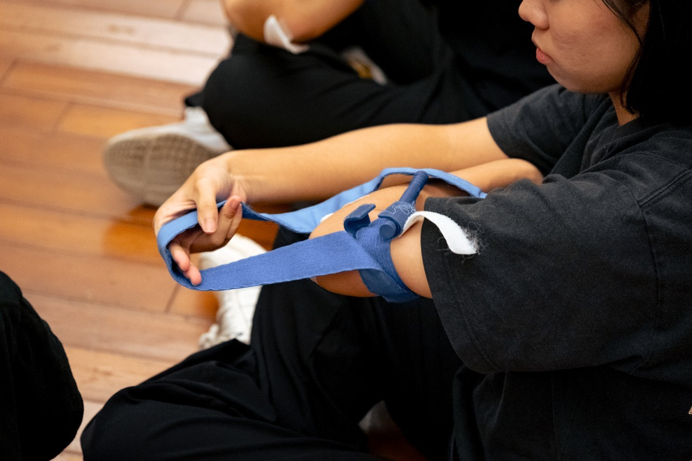
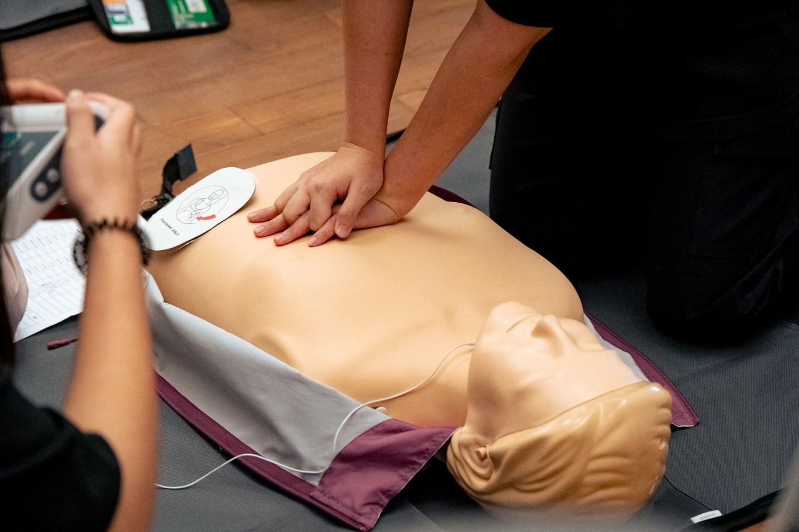
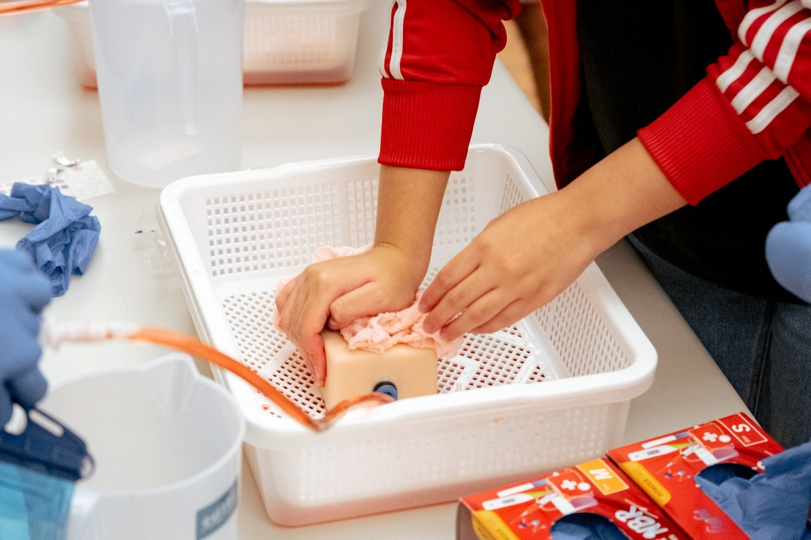